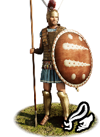
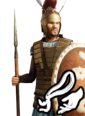
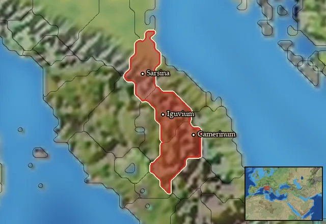

Umbrian Hoplites


Class: spearmen · Category: infantry · Men per unit: 40
Description
‘‘They [Umbrians] sent tough men: Amerians, and Camertes celebrated for sword and plough, the men of Sarsina rich in flocks, and warriors from Todi, no laggards in time of war.” – Silius Italicus (Punica, 8.461–462)
These Umbrian Hoplites represent the traditional military aristocracy and wealthiest citizen classes of Umbria. As may be expected from their social status and traditionalism, these men wear the heavy classical hoplite panoply, much influenced by their Etruscan neighbours. Drawn from the families of ruling magistrates and the noble clans of major centres such as Tuder, Iguvium, Perusia, and Camerinum, these aristocratic warriors march into battle in a dense hoplite style phalanx, designed to overwhelm the opposing battle lines through the sheer weight of their formation. While the widespread adoption of more flexible unit tactics and large oval shields (thureos or scutum) by both Romans and Celts has made the phalanx a rare sight in Central Italy, these noble champions and their retainers still hold on to their traditional equipment. They are armed with thrusting spears (dorata) and (in RIS purely decorative) xiphos swords as sidearms. Their primary defensive weapon is the heavy, bronze-faced Argive shield (aspis), decorated with beautiful blazons including anchors, sacred green frogs, tridents, and sunbursts. For body armour, they wear cast bronze muscle or lamellar cuirasses, composite linen corselets (linothorakes) with leather pteryges, bronze greaves, and crested helmets of the Attic, Chalcidian, or Etrusco-Thracian designs.
Historical background
Throughout the 6th to 4th centuries BC, the material culture and artistic self-representation of the Umbrian elite were closely linked to southern Etruria (Torelli, s.v. 'Archaic Rome between Latium and Etruria', in: The Cambridge Ancient History VII.2 (2006), pp. 35–45; Manconi, 'The Umbri', in: Farney and Bradley (eds.), The Peoples of Ancient Italy (2017), pp. 605–611). Extensive intermarriage, trade, and contact between the peoples created a common culture, “almost a central Italic koinè”, which existed along the Tiber frontier. In fact, sources and archaeological finds confirm the existence of Umbrian nuclei in major Etruscan cities like Orvieto and Perusia, with Volsinii sixth-century tombs containing numerous aristocratic Umbrian names, “demonstrating substantial and peaceful coexistence between the two ethnic groups” (Torelli (2006), pp. 31–35; Manconi (2017), p. 606).
A great example of the aristocratic military culture of the Umbrians is the famous bronze statue of the "Mars of Todi," discovered at the Montesanto sanctuary outside Tuder (Todi) and dated to the late 5th or early 4th century BC (Manconi (2017), pp. 610–611, 627). While believed to have been produced in Etruria, the statue depicts a noble Umbrian warrior in the act of offering a libation, outfitted in a heavy bronze-reinforced composite cuirass with double rows of pteryges, an under-tunic, and laced leather boots, carrying an Umbrian dedicatory inscription written in an Etruscan alphabet derived from Volsinii: ahal trutitis dunum dede, meaning: "Ahal Trutitis gave [this as a] gift" (Burns, The Cultural and Military Significance (2005), pp. 82–87, 103–104; Manconi (2017), pp. 610–611, 627).
The classical hoplite phalanx was firmly established throughout Etruria, Latium, and Umbria by the late 7th century BC, as demonstrated by the archaeological material found in tombs such as Matelica and Fabriano, and from painted or relief representations of the phalanx itself (Torelli (2006), pp. 35–37). As Rome expanded into Central Italy, these nobles certainly integrated and fought in the Umbrian armies, defending their autonomy during the conflicts of 311–308 BC (Bradley and Hall, 'The Roman Conquest of Italy', in: Farney and Bradley (eds.) (2017), pp. 202–203). Although the defeat at Mevania and the founding of a Roman colony at Narnia (299 BC) diminished Umbrian autonomy, the aristocratic hoplite class retained its status within autonomous communities like Camerinum and Iguvium (Liv. 9.41, 10.10; Manconi (2017), pp. 610, 629). These cities issued their own cast bronze coinages bearing the legends ikuvins (Iguvium) and tutere (Tuder) on the duodecimal system shared with Roman and Etruscan mints (Horsnæs, 'Ancient Italian Numismatics', in: Farney and Bradley (eds.) (2017), pp. 50–51; Manconi (2017), pp. 627–628). Nevertheless, like most peoples subjugated by Rome, the Umbrians followed a consistent process of linguistic acculturation, with the eventual adoption of Latin as the alphabet and main language of the region as a result (Manconi (2017), p. 630).
Throughout the Second Punic War, the Umbrian cities remained loyal to Rome, and their countryside was ravaged by Hannibal when he invaded Italy in 217 BC. After his victory at the Battle of Lake Trasimene, Hannibal tried to advance to the walls of Spoleto (Spoletum) and attacked the city, which was vigorously defended by its citizens. They forced him to withdraw and retreat into Picenum (Liv. 22.9; Cornell, s.v. 'The conquest of Italy', in: The Cambridge Ancient History VII.2 (2006), pp. 403–408; Manconi (2017), p. 629). At Cannae in 216 BC, multiple Umbrian contingents were present in the Roman army. We know this thanks to Silius Italicus' epic poem Punica, in which he catalogues the Italian allies serving at the battle, and in which he specifically celebrates the combativeness of troops coming from Umbrian cities such as Ameria, Camerinum, and Tuder (Sil. Pun. 8.461–462). Later in the war, in 205 BC, Scipio Africanus wanted to gather forces for his planned invasion of Africa, but failed to obtain permission to levy troops. Instead, he was allowed to enlist volunteers, which he promptly did. He raised forces among several communities, including the Umbrian ones, alongside the Sabine towns of Nursia, Reate, and Amiternum, who supplied volunteer cohorts of infantry, with Camerinum (a town in Umbria on the frontiers of Picenum) sending “a cohort of six hundred men-at-arms” (Liv. 28.45; Manconi (2017), p. 629). Following the Social War, the free citizens of Umbria received Roman citizenship with the Lex Iulia of 90 BC. Eventually, complete Romanization occurred during the imperial era under Augustus (Manconi (2017), p. 630-633).
Stats
| Rank in roster | ||
|---|---|---|
| Men per unit | 40 | ███······· 30% |
| Attack | 16 | ████████·· 80% |
| Charge bonus | 16 | ██████···· 63% |
| Defence | 45 | █████████· 88% |
| · armour | 10 | █████····· 54% |
| · defence skill | 30 | █████████· 94% |
| · shield | 5 | ██████···· 56% |
| Morale | 12 | ██████···· 57% |
| Discipline | Normal | |
| Training | Highly trained | |
| Recruitment cost | 1,840 dn | ████······ 40% |
| Upkeep per turn | 670 dn | ██████···· 58% |
| Turns to recruit | 3 |
Weapons
| Primary | Secondary | Primary | Secondary | Primary | Secondary | Primary | Secondary | ||||
|---|---|---|---|---|---|---|---|---|---|---|---|
| Attack | 16 | 11 | Type | thrown · blade | melee · blade | Projectile | javelin | — | Ammunition | 2 | — |
| Charge bonus | 16 | 16 | Damage | piercing | piercing | Range | 50 | — | Properties | Used just before charging into combat | Light spear (braced against cavalry charges from the front) · +8 attack against cavalry |
Defence
| Primary | Secondary | Primary | Secondary | Primary | Secondary | Primary | Secondary | ||||
|---|---|---|---|---|---|---|---|---|---|---|---|
| Total | 45 | — | Armour | 10 | — | Defence skill | 30 | — | Shield | 5 | — |
Condition and terrain
| Hit points | 1 | Ground: scrub / sand / forest / snow | -1 / -1 / -4 / -1 | Charge distance | 30 | Formations | Square |
Technical stats
| Time between blows (primary / secondary) | 2.5 s / 2.5 s | Collision mass per man (1.0 is normal) | 1.27 | Spacing between men: close / loose | 1 × 1.05 m / 2 × 2.4 m | Default ranks | 5 |
| Extra fatigue in hot climates | 3 |
In battle: Can sap · Good stamina
Who can recruit it
A core roster unit for one faction, which can raise it anywhere it holds the right building:
Any faction holding one of the provinces below can field it.
Exactly what a settlement must have, route by route (3)
| For | Building | Also requires | For | Building | Also requires | For | Building | Also requires | |||
|---|---|---|---|---|---|---|---|---|---|---|---|
| Sarsinates | Direct Rule | Tier 2 Military Industrial Complex · Tier 2 Colony | Sarsinates | Homeland | Tier 2 Military Industrial Complex | Every faction except Sarsinates (area-of-recruitment unit) | Any settlement | Tier 2 Military Industrial Complex · Umbrian area of recruitment · Dependency only · Tier 1 Colony not built |
Areas of recruitment

| Zone | Provinces | ||||||
|---|---|---|---|---|---|---|---|
| Umbrian | 3 |